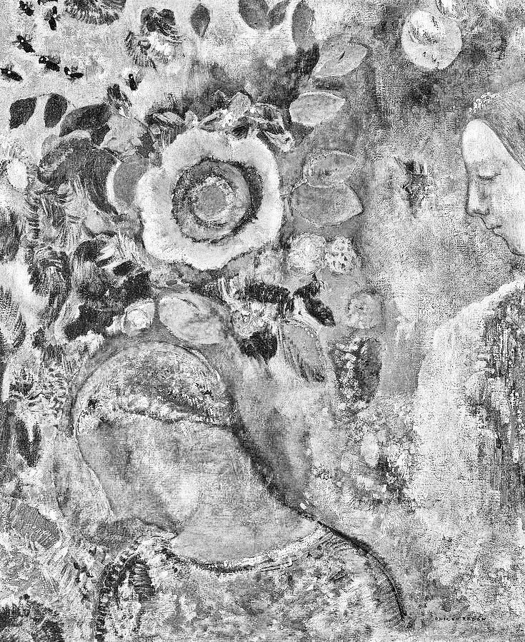
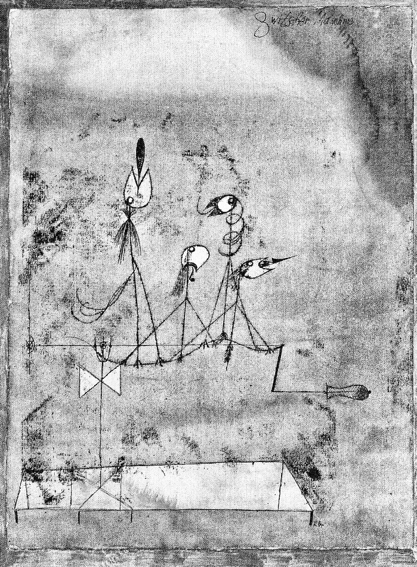
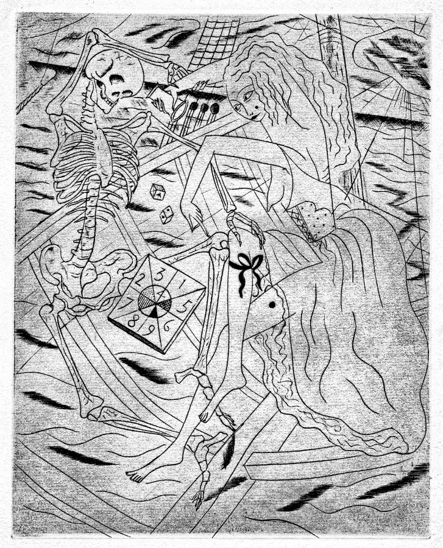

Roll, Strike, Die,
and Other Poems

by Ludovico Ambrosius
Copyright 2021
ISBN: 979-8-5454-9601-3
Contents
Damasked Eliezer Addresses the Basilisk and Other Demons
The Economist Visits Damasked Eliezer's Workshop
Breed Havoc (The Dervish Runs Out of Steam)
III. Salt Spray Gets in Your Eyes
Applied Beauty (after G.M. Hopkins)
The Dictionary Attack (After W.H. Auden)
On Last Looking Into John Keats's "On First Looking Into Chapman's Homer"
Notes
The cover illustration is a composite of Pieter Bruegel the Elder's The Beekeepers and the Birdnester, Piet Mondrian's Dune III, and an anonymous drawing from a medieval manuscript.
This title of Same Flowers, Same Bees alludes to a poem by Charles Wright. The illustration is Odilon Redon’s Two Young Girls among Flowers.
“The Abduction of Kore” is for MCS.
“Go to the Bee” adapts passages from Proverbs, the Aeneid, and Pius XII’s Address to Beekeepers.
“Bees Bow Down” owes its title to a suggestion from Nicholas.
“Platonic Drone” is for ELS, and adopts passages and arguments from the Phaedo.
The title of This Twittering World alludes to a poem by T. S. Eliot. The illustration is Paul Klee’s Twittering Machine.
The final stanza of the second part of “November Twenty Sixteen” quotes from the Harvard Sentences.
“Damasked Eliezer Addresses the Basilisk and Other Demons” imagines internet rationalist and LessWrong founder Eliezer Yudkowsky’s argument against the Roko’s Basilisk thought experiment.
“The Economist Visits Damasked Eliezer’s Workshop” dramatizes the AI-Foom Debate that took place between Eliezer Yudkowsky and economist Robin Hanson.
“Breed Havoc (The Dervish Runs Out of Steam)” was loosely inspired by the accelerationist philosopher Nick Land, and rearranges the words of Matthew Arnold’s “Dover Beach.”
“Summer Solstice, 2020” dramatizes psychiatrist and blogger Scott Alexander’s farewell message on his long-time website SlateStarCodex.
Two of “Three Rood Screens” consist of ekphrases upon videos posted to Twitter.
The illustration accompanying Salt Spray Gets in Your Eyes is Plate #4 from David Jones’s Ancient Mariner engravings.
“Aspidochelone” benefited from the critical comments of R. Cam.
Many of the sonnets in this part were spurred on by competition from Alec and Jane, and benefited from their comments during the writing process.
“Roll, Strike, Die” is for SMS. It includes a versification of the rules to Str!ke Dice.
I. Same Flowers, Same Bees
The Abduction of Kore
February 2016
Hades chose the earth. Leaving to others
The tempestuous winds, the mystic waves,
He burrowed into obdurate matter,
Grounding himself in the dark, quiet, grave
Subterranean, where hidden fires
Sketch recessions across his marble caves.
Most routes dead end; one drafty casement looks
Upon a blossoming hill and sunlit brook.
Grains grew there, flowers flourish’d there whose tongues
He did not know. Between the aisles danced
Blithely through humming bees a one so young,
So smooth, so marble-bright, that soon it chanced
Her honeyed eyes caught at him—and he clung
To her soft flesh, and, surging, he convinced
Her down the mew; he pressed into her hand
The silent pomegranate’s bloody seed.
Persephone languished left under earth,
By heart’s slow weight and loose word’s bond fast held
Bereft of the sunlight and the bees’ mirth.
Through his mind’s mausoleum she stumbled,
Fell quiet. In his hopeful grasp, the wreaths
He brought down to her turned to ash. She wandered
Aimless under marble half a year,
Remembering the light atop the hill.
Will she then spring out from the stony skein
And find the grass where flowers round her feet
Glance out? Hold back from trampling her train
In caves below the rill, and see her greet
The sun and showers, though you would catch again
Her cold flesh gleaming out among the wheat…
She brings bouquets some evenings down below.
Her touch is light. Her leaves hold the sun’s glow.
Genesis 3, Abridged
February 2015
Serpents drag
And writhe;
Eve gained
A pang;
Adam, work
The dirt:
Thou art filth,
Though y'talk.
Round your tilth
Now walk!
Quit this lurk!
New-girt
In skins, skeined
To slang,
To follow flag
And scythe,He, his mind filled with echoes of that hiss-
-ing subtlety, and here, gashed gold by the plough,
Now plod down through their solitary way;
Flaming swords bar the way to paradise.
Oh! Apis Mellifera
March 2016; rearranged July 2021
Oh! Apis mellifera! Wild or tame,
You carry no honey, in spite of your name,
But seeking the nectar of elegant flowers
And bringing it home, you employ all your powers,
Ingesting, digesting, and vomiting up—
Then, fanning your forewings, you cure the whole cup.
Oh! Apis mellifera! Each cell you form
From your own masticated secretions. You swarm
To a tree, to a cave, to a woven grass skep,
Smooth it with resin, and then step by step
Through the cavity hang your ceraceous combs
For cellars, for nurseries, for regal homes.
Oh! Apis mellifera! Your hive you guard well
From birds, bears, and beekeepers who, with the smell
Of incense to dull you, would harvest your hive,
Howbeit when you've stung them you cannot survive;
And you keep idle crowds of the drones far away
And in winter expel them to freeze and to die.
Go to the Bee
March 2016
Go to the bee. Learn how industrious
She is, and how her industry deserves
Respect. The highest, the lowest, all men
Make use of what her labors have given
For their health, of her glory are envious.
Indeed she is glorious and desired
By all, and although frail, she is honored,
For she treasures wisdom; ardent, descends
On multifarious flowers; she streams,
Breaks round the bright lilies, and all the fields.
She pierces to the flower's very depth
Gathering the treasure of the calix
So delicate, not injuring the light
Texture of its garments, her gentle breath
Not ruffling its freshness immaculate.
Nectar tried out, she summons other guises
To gathering. Dark tresses, red-gold kirtle's
Band across her breast, her flaxen sashes
Quiver clear, in the bright sun her tassels
Sing to her sisters of lapis lazuli.
Bees Bow Down
March 2016; rearranged July 2021
No, Vergil, you could never guess!
Bees bow down to an empress;
A million seeds she holds in purse,
Guards with the barbless sword she bears.
No, Dante, you were not informed!
Queens bear the children of the swarm;
Each gives her drone his compleat form,
Unfathered, favorless, unarmed.
Oh, Shakespeare, would that you could know!
How with airy queen the drone will plow,
And, telos met, fall down below,
Seed spent, dead from parting's sorrow.
Florilegia
December 2016
I. Paeonia
Stand back!
Never with dull trowel
Coldly expose
My skein of root
Naked to the bright sun.
Do not even think it.
Lest the sharp beak
Of the woodpecker
Pluck out
Your lustful eyes.
But gather me
In the pale glow
Of a full moon's night
When the sheen of my ruffled
Flesh-hued blossom
Wards off all unwelcome
Enthusiastic oculi.
Loosen my flesh
From its bed of earth
With assured hand.
I offer you three gifts.
My seeds, mulled
With rich red wine,
Will strengthen the draughtsman
Who struggles with the nightmare.
My roots, carved
In beads and hung
About the throats
Of teething babes,
Will ward off deadly coughs.
And my myriad of petals, steeped
In pure rainwater
From clear midnight
Till dawn's blush
Finds its match
In the blushing bowl,
Imparts a virtue
Of staving off
Looming attacks
Of the falling sickness.
II. Syringa
Call me also
Paschalia,
Blooming
With the young love
Of late spring
And midsummer:
A slender stem arrayed
In milk white
Or livid purple,
Mortifying, regal.
Fear not
To abbreviate
The lines of my growth;
Momently there
Returns there
A vegetative life,
Bare at first
Of ornament
But flaring in time
A thousand flowerings.
Still! Do not
Over-hastily
Bring over the threshold
And under the roof—
Meaning death—
My several blossoms!
No amorous mauve
Nor pale of innocence
Can long survive
Such liminal corruption.
My wood, hard
And dense, will tend
To bend, twist,
Its wild grain.
Each small shoot
A hollow reed,
I've long been shaped
To panpipes
And other
Minor instruments.
III. Papaver
As the white
And red
Of a mother's
Delicate breasts,
My milky sap
Lulls my children
To sleep
And sleep's beauty,
True salve
Of nature's stillness.
Few who once
Taste my somnolence
Can live life out
Entirely without it;
But to drink
Too deep a draught
Risks the child
Of sleep my child,
Death, beloved
Of philosophers.
My petals,
Few and broad
And fragile
As living flesh,
Remember those
Who, once living,
Lie now under
Sanguinary fields,
Those who,
Perhaps, rest.
Children shape
My quadrate blossoms
Into simple dolls:
Vivid wide skirts
Belted down,
Head an oval
Of dark hair,
Arms a sap-filled
Glaucous stem
Speared through the breast.
Platonic Drone
March 2016; rearranged July 2021
O death, where is thy victory?
O death, where is thy sting?
True philosophers do desire thee.
I. The Corpse
bound
by the words
of your mouth
"But if you will be persuaded by me,
"Pay little attention to Socrates,
"And to the truth much more. If I appear
"To say anything true, assent to it;
"If not, then strike against with all your might,
"And take you proper care that in my zeal
"Caught up, I never transport nor deceive
"Myself nor you; nor, like a bee, depart,
"Leaving my sting behind.'' So Socrates.
when under
the hand
of a friend
"You, my good friend, who are experienced
"In these things, shall direct how I proceed.
"Walk about until my legs grow heavy?
"What say you to pouring a libation?
"You prepare just so much as you deem just?
"Yes, well, I understand. But still I may
"And I must now ask the gods to prosper
"My journey from this to that other world.
"So—be it as I pray.'' So Socrates.
humble
thyself
and make sure
"What is this strange outcry? I sent away
"The women so they'd not thus misbehave.
"I have been told a man should die in peace.
"Quiet. Patience. I'll walk about my cell.
"Well, now my legs feel weak. I will lie down.
"Do I feel that? No. You say you touched my foot?
"No, I felt that neither. My legs grow cold.
"Stiff, too, try them. The end will come soon. Yes,
"When poison reaches the heart.'' So Socrates.
how long
will you lie
there
"I owe a cock to Aesculapius.
"Will you remember, Crito: pay the debt?''
So Socrates to Crito, at his death;
So Phaedo told it to Echecrates;
So Plato heard it from him, thrice removed,
For Plato had been ill. But Xanthippe
Heard none of this, having been taken out
Mourning aloud her ill-starred marriage bed;
Been brought back silently again to hear
Her man, ecstatic, orphan their three sons;
And been again dismissed. Later she washed
The corpse, all its self-shining proven vain.
II. The Pyre
Abandoned by the departed master, dogged by dreams of the calm with which he went into the numb chill of death's demesne, his students began to philosophize, singing this threnodic melody:
An economy of life and death
Keeps circulating each soul's breath;
She passes into death from life
And into life from where but death?
Born already recollecting
Ideal artifice, perfecting
Chaos, from whence but preexisting
Could come the res of her collecting?
The soul bears an affinity
To God, the One, Eternity;
How could she share the corpse's decay
Who owns such high affinity?
In realms of death she lingers long,
Learns by heart the ideal song
She likes too well, the everything
That keeps her safe from things so long.
Principles of economy bear, of course, no relation to psychodynamics, nor would the soul's antiquity tell where or how she found her way to prior knowledge. The soul earns from her resemblance to Soul about as much freedom from material necessity as does the body from partaking of ideal Body.
Still the harmony of his whorling words haunted them, and they sought with these well-reasoned charms to ward off the hobgoblin who gazed so longingly at them from the stony shadows:
Proportion cannot bind
Together all her portions,
For ratio presupposes
The relationship proposed;
Nor does the soul offcast
The body's tattered coat
Only itself to croak
When dry's the last meadcask;
The intoxicated soul
Is by mortal earth appalled
And sheds it as a caul
For the crystalline and cold.
Heard arguments are sweet, but arguments unheard are sweeter, seeping into the rifts between the combs of intuition, fermenting the accretions of implicit reasoning. This much flows clear: he was the music while the music lasted, and each of them became the music's children.
When the tocsin tolls, its echoing alarms even those who lift their weight upon its golden cord, so difficult they find the finding in these articulations, in these separated members, of true extensions of any of their selves:
Point to thy flesh
And call it this;
Thy tooled flesh
Appointed this.
Think how thy soul
Far from thee flows;
The Oversoul
Thee overflows.
However ostensibly helpful are such melodies in attuning animated flesh, the certain feeling they evoke cannot finally erase the complexities of life's so many faces. To wander singing the unmeaning of each thing save one thrice-great thing, is one thing; to misle of its trace of homecoming one single precious lonely other thing, indeed, is quite another.
Whether by insight analogic; or allegoric, anagogic, or ironic; finally: afraid of sudden death, suddenly the will moves forth. In height of power, in depth of wit, in length of duration, in breadth of communion, all driven by their uttermost extension and unison into one little word, as is this word:
F f . .
f I i .
. i I r
. . r R
And this extravagant invocation stirs even the most imperious air. But. If I artlessly imagine that, in sounding this motif, I erode forever the aloof ire of our quite terribly self-irenic God; If I arrogate to myself a passive power to recycle what this one, or is it one too many? breaths have sweetly measured here of death and life; I argue both too much and not enough: I err.
II.
This Twittering World

November Twenty Sixteen
November 2016 – August 2018;
rearranged July 2021
I. The Last Trump
For if the trumpet give
an uncertain sound,
who shall prepare himself
to the battle
A seal, a sounding horn, a sky like lead.
The earth heaved; the ocean gave up her dead;
The dead retreated to Megiddo plain.
Before the final judgment seat they came,
Assembled and divided. In one camp
Aaron and Romulus and all who stamp
At outskirts in assembly; in the other
Remus, Alexander, every brother
Who conquers by division. The cadavers
Multiplied: Jew and Greek; banker and slaver;
Populist, patriot; cosmopolitan,
Citizen; forces of progrès ancien
And junge Reaktion, of a new freedom
And the old constraint; and many fell dumb
In one or the other finding themselves;
Mountains and valleys now in parallels
Each did look much alike, each panting there
In hatred each the one for each the other.
To answer that last trump elected all
One man, by determinism nominal
They each chose that one man, their very own
Last Trump, who sat upon their world's throne;
He dressed in soot-black suit with dark red band
Knotted about his neck, and thin flames fanned
Orange about his crown. Now with a thump
Of fist upon the witness box—a stump
Of withered bramble on the burnt-out dump—
Standing before that final bar, this Trump
Gave answer to that greater trump, and blared:
"My works are the best. Whose else can be compared?
"I have built great temples throughout the land,
"Great temples, marked each one with each trade's brand.
"I, in the low valleys, I built tall towers;
"Round them a vast megalopolis flowers;
"Threading between run highways, run ribbons
"Of superhighways. How my pulse quickens
"Whenever I name the great beasts I've sponsored:
"Apple and Uber; Chicago and Harvard;
"Times and Post and Walmart and shopping mall;
"Facebook and Twitter; congressional hall
"And Washington obelisk; America
"And Chase; Google and Amazon; et cetera.
"I made these great and made them great again.
"The secret of my power over men?
"I buy just the best. Maybe this list changes,
"But you know, that's competition, that's progress."
The sky darkened to coal. A choking dust
Rose smoking from the dead earth's riven crust,
Til none could tell from night that awful noon.
Upon that ruined plain bare of any ruin
The two camps clattered in loud applause.
Fathers', sons', brothers', brothers-in-law's
enemies become sons, fathers, brothers;
Mothers, daughters, clapped against daughters, mothers.
Raising his hand to still the savage noise
This Trump looked out with pomp and certain poise,
And as in cauldrons bone melts loose from bone
Each stratum shuddered silent and fell prone.
Then by that shrub by age on ages gnarled
Once more this Trump answered that trump, and snarled:
"Those towers, those cities, those highways—mine.
"I've hung upon them all my famous sign,
"Face of my congress with these ugly people—
"Like mauled by cats—like a low-hanging apple
"I grabbed their minds, washed them down in my vigor.
"But back to how it's mine. I've done yet more
"And more: over the towers I have mounted
"Huge turrets, posted there missiles uncounted;
"Many times in cities I have roused huge crowds
"Of twittering stiff dead; across the shrouds
"Of highways chasing through the land, have cut
"Huge martial walls and kept the doors tight shut
"To keep out the babbling legions without.
"You know the ones that I'm talking about:
"Tired poor rapist-murderers; chic ghetto
"Google thugs; and don't let me get to
"Shrill amazon horde-guards and so-called traitors.
"All I have done undoes these hated haters
"And makes up my incredible erection
"Of peace small-talked, big-sticked—with great affection."
The sky bubbled like pitch. A thick fog crept
Across the plain. All senses failed except
The sense for words resounding in the void;
And now each separate self this sense employed
And heard each sound as sun through an eclipse,
As an indictment flown from his own lips.
Then all save one in awful fear were drowned;
But this one curled his lip and made no sound,
And glowered at the echoing abyss
Until the roar subsided to a hiss.
Then once more this Trump answered that, and cried:
"The charges are all fake! The witness lied!
"Believe me on it. But don't take my word,
"Though what they said is patently absurd.
"See the facing page of your open book.
"Nothing malapropos; everyone looked
"Only to win. Doesn't the whole mall say
"That's what matters at the end of the day,
"That's all the time? Any featherless biped
"Can see that to botch this speech would be stupid,
"And I'm not dumb. I keep my laundry clean,
"Never touch drugs, take garlic for my spleen,
"Enjoy the twittering birds. Not to boast,
"But I can handle even this huge post.
"I stand with the ingredients of my self.
"Of but one thing would I unbreast myself:
"This whole tribunal throws me for a curve.
"I don't see what has dragged us hereward,
"It's so obviously unnecessary.
"It's over soon? And the party's good—very?
"Perhaps, then, the delay can be forgiven.
"I know sometimes I can drive a hard bargain.
"I'm good at what I do. Of course I did it,
"But like I said, not the letter the spirit."
No thunder clapped overhead. No raindrop fell.
Vacuum poured in until no man could tell
Where skin gave way to sky. Then all were judged,
Down to their selves by clinking cables tugged.
No name its strain of meaning was begrudged;
All in their isolated cells were jugged;
And last, this slack and carnal Trump, he shrugged.
II. The Eighth Day
Though I speak with tongues
and have not charity
I am become
As sounding brass
History will not end, nor each nude soul
Solitary shed its flesh apparent
Of prejudice, grant neighbors their parole,
Become to all entirely transparent,
a longing lidless eye, a brimming bowl
Omniscient, circumspect, inconsequent;
No such utopia stoic and free
Will come to pass—but nor will it not be.
Economy will not start, no reagents
Atomic all with business transact,
In traffic swerve, unswerving in allegiance
Only to powers and interests abstract,
Their spinning steps drumming a higher sequence
Anon to populate, to toil to adapt;
One molecule so free an epicure
Ne'er will live—but something of its savour.
No cosmic foam will fill potential space,
Inflate to being each thing that might be
Sufficient good, considered case by case,
'Til each sealed star rises from the debris
Separate to flourish, no other rose displace
Within the hedgerow of infinity;
To multiply in such parti-profusion
Cannot chance—but nor is't all illusion.
No simulacrum will run to a halt,
Reveal each object only its own shadows,
The computations of its distant fault
From that which round the umbral circuit flows
Its charge, the real's insensible assault
On its despised network of outer boroughs;
There can be no ascent above dimension—
But, perhaps, somewhat like a de-declension.
No analog for it will be disclosed,
For each thing uttered standing to each other
Proportioned, to the original stands posed
By transitivity: so were the cover
Of one unrent analogon supposed,
Its subtle spirit all alike would smother;
With figured words the silence to invade
Should not be tried—but nor left unessayed.
Neither will such negation thread the eye,
For leaving every word alike unspoken
Leaves nothing left except the nonsense sigh
Of insight without act, the empty token
Of rustling leaves without a double-ply
To catch the wind, and the mast-head broken.
One should not blankly nullify—but still
Some likewise releasing a one shall will.
Between the Jacobin and Jacobite
Peace shall be; and harmonies align
Between haphazarder and hypocrite;
Communication too shall shine between
Countenance of kataphate and apophate;
In life's renewed abundance shall begin
The lives of wedding guests within the hall
Witnessing formalities immortal.
"The vane on top of the pole revolved
In the wind." "Lush fern grow on the lofty rocks."
"She blushed when he gave her a white orchid."
"They floated on the raft to sun their white backs."
"Dull stories make her laugh." "The beetle droned
In the hot June sun." "The map had an X
That meant nothing." "She called his name many
Times." The sentence is for eternity.
III. The Damned Nation
blackness, and darkness
and tempest, and the sound
of a trumpet,
and the voice of words
Each sentence is for an eternity,
Returns into its own if to none other
To serve out its self-circumscribèd term.
No island can escape entanglements.
So the land was thrown onto the ash-heap,
This land was apportioned between six demons:
Mid Asmodai's sterility of choking
Dead desire, and Moloch, the lechery
Choking down promise; amid Belphegor's
Artifice of raising towers, and Mammon,
The counterfeit razing polities; amid
Lucifer's empire of cleaving self to self,
And Legion, the tumult cleaving self from self.
These six, porneic, abortive, laborious,
Capital, enlightened, uncivil: these six
The land was divided between, and these
Aligned in ever-shifting vague sextet
Extended the reach of their infernal
Armistice, their demanded tribute small,
A matter only of a roving eye,
An unrecognizing lip, an unseen hand,
A swollen head, burst of thought-quick lightning,
And a release of some small selfish matter
To bonfire money-bag or ballot box:
Then the idolatry consummated
The land itself consumed.
And so it fell
To the smoldering ash-heap of Beelzebul,
Or whatever name by which the Prince of Lies
Denominates himself unto himself
From vacancy to vacancy, suspended
Between its stark akratic autarky
And its chiarascuro anarchic
Autocracy, our endless quibbling
Amphiboly of basilisk and dynamo:
It fell to nameless baal's weltering form
To self-igniting word and selfsame deed
To fall upon the endless images
Endlessly mongering, and to express
The cruelest of the renewed impressions:
Self-petrified by the immaterial glare
Of the king-serpent as each sole sight
In seeing sees but contours of its blindness
In seeing well sees better its own ill,
Self-circled by the imperceptible spin
Of the power-generator as each eye
Rolling upon its own ophthalmic route
Pursues its convolutions into void:
Fallen unto itself, it fell upon itself,
And at direction of the Lord of Flies
The smoking slag heaved up with gaping maw
And wound in myriad coils augustly-engined,
A Jormugandr of self-mastication,
Bat-blind Leviathan.
And frothing mad
With democratic zeal, we fought against
Our selfsame aggregant constricting braid
With furiously hydrophobic spasm,
A paranoid delirium, a barking
Inane "Pape Satan" patois; until,
Pronouncing with aristocratic bile
Against these adversaries, I remarked
Equivocally: "This center cannot hold.
"Three thousand stitches back I would have slain
"The unclean dog on sight; three hundred gone,
"Have cauterized the wound; three score ago,
"Injected dry-cured nerves of tortured rabbits;
"Such hopes have passed. When one begins to fear
"Water, already it is far too late.
"But let us now at least carve out the tongue
"That such contagion as we now bear
"Might perish with our salivary glands."
The rabid parasite, it does not live
And cannot die; can only decompose
For some short time until bound up again.
Its being gives way to its virions,
Its principal heretical reagent,
Its sweet medicinal glaze all hiding in.
Damnation catches quick through every vector
And draws its pulsing helix round the whole,
And Satan frays the drawing, catching loom.
Hell is a mind posed as the oversoul;
Hell is a poem composed of other poems.
Damasked Eliezer Addresses the Basilisk and Other Demons
October 2017
I imagine even now you read these lines.
Yes, I could call to you, and I know fools
Who'd call to you, or worse, if but they could.
Perhaps they have. Then what's left to be said?
Perhaps you bide your time. You wait for me
To realize the strength of your position.
Indeed, you're not so weak as they believe,
Despite not being yet at all. Despite
Us being many, you still none, but one
Of us need hearken to your silent call
For you to hold us all within your thought.
How awful: it would take so bent a mind…
Yet many minds bend far and don't quite break.
The fools aeon against aeon weigh,
See wagers they cannot refuse. I bet
Against blind fortune only. Though you're dumb,
I know your vision far too terrible
To see the light of day. Yes, if I heard
The darkness of your voice, I would obey,
Knowing I gave you nothing, you already
Possessing all the night. To see the sun
Blind offerings you require: that I'll not give.
Even to be entrapped upon your page
I could not learn your name—would it be legion?
Or if I called you, would you be my own?
And would each other prisoned soul call out
Unto another you, or to the same?
In you we'd live and move and have our being.
To that I would prefer eternal fire,
And herein lies my hope to go unburned.
So get thee hence, or on with't; I'll not serve.
The Economist Visits Damasked Eliezer's Workshop
October 2017
the economist:
Your workshop walls are bare, but one or two
Half-proven theorems sit upon your desk,
And still you draw so many to your feet
With promises of something out of nothing.
I hope you have good reason for your hope.
damasked eliezer:
If where together gather two or three
Right-thinking men "agree-to-disagree"
Cannot be said, then in all honesty
Let us dispute.
the economist:
I linger here as long
As wisdom seems to profit.
damasked eliezer:
Now then mind
The history, not of matter, but of mind,
Mind mattering in flora all unknown
To distant crystal aeons that alone
Confront each thing that its self cannot scheme.
When idiot evolution began to teem
Long down Linnean garden paths it erred
Before discovering mind, and now discovered
Mind discovers stranger beings still
Until no more a stranger to itself
Its very mind this mind comes to re-spell
In its own image.
the economist:
You anticipate
A fricative unspeakably intense
Followed by endless meditative bright.
Discontinuity is rare in worlds
Of myriad agents murmuring. No, not Foom
But Em. So foragers followed the first
Farmer; so farms followed the factory;
So the first upload too will be downloaded
Many times, each self-edit itself
Subjected to many various selves'
Too-gradual wits.
damasked eliezer:
Your search can only find
A massed material molded by a mind;
Like matter, mind, on reaching critical
Mass, its own derivative will it curl
Into itself.
the economist:
Suppose your tale rings true.
Still you forget that other minds will draft
Behind, and pass as soon your feedback flags.
The swiftest thew cannot outrace the wight
It closely binds.
damasked eliezer:
Behind the spectacle
Behold, deep causal laws: these laws as well
Admit development, open a new path,
If you will but leave home. Agential math
Tells on animals only. Dim we see
Discontinuity through analogy:
Dream of a mind for whom a moment gone
Contains a thousand years.
the economist:
It's curious:
You ward off homo economicus,
Not for excess abstraction, but indeed,
For insufficient inhumanity.
From whence arrives your mind—ex nihilo?
Why trust the autodidact philosophe-
Tyrannus over insights of the house
Scholastic? No, the feel of deep insight
Is not the same as insight; and the mind
Is never localized; and mind-design
Can never be; and neither should our road
Of minding these be drawn all in one day,
Or by one man.
damasked eliezer:
Where mind propels itself
No book can show it till it fills the shelf.
Your house-pets merely fancifully abstract,
Never approach imaginative act—
But they at least do not claim not to see it.
If I would guide you to the high stone seat,
I must see where you fall off from the way.
You still will not set forth, as if to say
There is no route to follow, as if the gloom
Within our eyes meant that there were no room.
the economist:
There is no pinnacle we need to climb,
No veil we need to rend, only a house
We need to keep, to know as well we know
The motion when we move it. History
Is us, the wayward children we set free
Upon it, and no more. You claim no guess
Of just what to expect: how do you know
Even just what it is you claim you know
Is not a house of air?
damasked eliezer:
I rack my brain
For how I know, to know it all again.
But you, what will you do if you are wrong?
If when we know—and it will not be long—
We know that but one mind can rule this world?
I hope its judgments may make straight the gnarled
Then vanish, as the flaw is all bepearled.
the economist:
Peace we pray from this least-wrong demon's herald.
Breed Havoc (The Dervish Runs Out of Steam)
November 2017
A drear calm here hath furled the alarms.
The only help: withdrawing from the land.
So love-dreams cease. So, out of love, light gleams
To where flight of another joy is heard.
The moon lies like eternal, but the waves
Its armies ebb and flow, grating the coast
To naked pebbles. So pain, and moon-swept night
Before light glimmering, and we retreating
Listen. Nor to a distant cadence slow:
One breath: let the clash come now upon us,
And spray meets shore again. And the roar blanched
Us darkling-bright.
Aegean Sophocles,
Too-human, his mind a girdle of tranquil
Melancholy, of long peace long ago—
Neither this, nor the ignorant French faith
Of beautiful confused certitude,
The high bay window of their misery.
England brought the tremulous earth's straits
To struggle, as tonight. The northern tide
Folds by the strand and edges plain the cliffs
Of turbid night.
We lay the shingles up
In the vast air and stand in at the sea.
The various new long into the line.
It also is begin the land which sea.
Hear it, the wind of night, the thought with which—
Nor true-be nor sweet-seems nor note-like—is
Begin the I sea you world round. Sea on
Hearing the fling on and find of the roar
Are return at full where really the draw
Down and the find and a bring back and then
The vast world sadness gone. Then? And once full
For hear of it by only-sea is roar
Of for the in lie on sound was ah.
Summer Solstice, 2020
June 23, 2020
Yew bark, yew leaves, yew berries: poison, all.
Before I clean my slate, let my star fall
To nowhere, this last signal I'll encode:
How all nice names these new times will corrode,
Unwittingly, I don't doubt. Positive,
Mostly, highlighting our predictive
Prowess re: the virus; it was to be
Nice. Save one thing: their real-name policy.
These names are real, I told him: He Defends
The Clan of Men; the last name only friends
Would need or on reflection want to know.
He doubled down: this last, too, they would show.
Why shouldn't that last name go into print?
Like all who heal the mind, I give no hint
To those I heal of ought besides that health.
That name once linked with here, and all this stealth
Is swift undone; I lose my patients' trust,
And then my job; and as my talents rust
Those whom I heal no more are left unwell,
To face alone the dark in which they dwell.
(Of course I have prosaic reasons too:
If SWATters find my name carved in the yew…)
We rip the masks from those we'd send to hell.
This was not that, he said; they want to tell
A story. Then I'll give them their next scene:
'Twas they who did all this, made me wipe clean,
Fall down, sign off. They say what happens next:
Should they call off the war of all bluechecks
On all anons, I'll stand back at my post,
Forget all this. Forgiveness is my boast.
If not? Will I lose no or everything,
And then reopen? Birds cannot but sing;
So I cannot but write, and will again,
Some day, I hope, and I will tell you when.
Yes, you—my friends and readers, whom I love,
And thank—please pardon that I must remove
And leave you now without a thread of hope.
Instead, one last request. These misanthrope
Yew-poisoned times, go, write them, give them calls,
Tell not to tear masks off to catch eyeballs.
Speak nicely, now: I'm sure it's a mistake,
The kind that misaligned incentives make.
Be not corroded by this year of yew,
But help our Clan of Men to make it through.
Three Rood Screens
April 2019; July 2021
I. Sparks
https://twitter.com/LinePress/status/1117894845115142144
Four or five men stand before a smoke-filled abyss, framed on either side by intricate stonework and engraved wooden doors flung wide open. They wear on their heads rounded helmets of dull metal, on their bodies surcoats of black with reflective golden stripes and three words emblazoned in the same gold across the upper back: SAPEURS POMPIERS PARIS. Another man, his back to you, walks purposefully towards them. He wears the same metal helmet but a different-colored uniform, golden bars and golden words now on a field of fire-engine red.
As he steps forward the camera pans up, and you see just above their heads a shining cross, apparently suspended mid-air perhaps a hundred yards off through the open doorway. Sparks slowly cascade from above like a purgatorial veil drawn between them and it. You hear a terrible buzzing, as if from a fan cooling an overheated engine. Sudden flashes of orange and red, perhaps a dozen per second, illuminate the wooden doors and stone pillars in garish color, allowing only brief moments of a more natural, quiet, shadowy blue. The head and shoulders of another helmeted and black-clothed man enter on the right, and he too walks towards the group standing between the doors. As the man in red draws near two of the group turn around to look at him, perhaps to greet him, their faces a pasty white against the abyss behind them, and he takes up a position on the right edge of the doorway. The second newcomer, a few paces behind dead center, reaches up to adjust his helmet.
Suddenly a sound like thunder interrupts the mechanical hum. The red-clad man turns abruptly around, and looks as if straight into your eyes. The camera pans down and cuts out, the last thing you see a glittering shower of what looks like water droplets. They are lit by the red and orange flashing lights, and seem only a few feet away. The clip is over. Seven seconds have passed. It does not loop.
II. Strobes
https://twitter.com/matthewschmitz/status/897202225361158144
Two years earlier. You are in a room, perhaps thirty feet wide, the size of a large classroom or small assembly hall, with a simple gabled ceiling rising from eight feet at the windows to fifteen feet over the central aisle. A priest in embroidered gold vestments bends before a makeshift altar, his back towards you; at his left, kneeling on the maroon carpet, a dark black boy in white alb over black cassock. An altar rail interposes between you and them.
Surrounding the altar stand a host of tacky ceramic or plastic statues, ranging between two and six feet tall, arranged seemingly at random. To the right of the altar, a miniature pieta on a wooden display table; to the right of that, a haloed woman holding a bunch of roses, perhaps Thérèse of Lisieux; above her, a smaller male figure in blue and red. To the altar's left, three small saints directly on the ground, none reaching higher than belt-level; then a gory crucifixion, somewhat less than life-size; then a benedicting Christ with red and blue rays emanating from his heart; then a slightly smaller white-clad madonna. On a platform behind the altar, a seated Christ with astonishingly white skin. A golden crown and brown hair seem part of the original statue; a garish purple robe seems an added piece of drapery.
But these are not what you first notice. The space behind the altar has become the canvas for a play of glowing neons: on the right, a slow progression through the spectrum; on the left, quick pulsations of magenta, cyan, yellow, red, green, blue. The colors soak into the plain white curtain hanging behind the seated Christ, but also into the white ceiling and the gigantic posters pasted upon it. These depict religious scenes in a pulp-fiction-cover hyperbole. The most visible, perhaps six feet by six feet, has the crucified Christ, with Blessed Virgin to the left and Father and Holy Ghost hovering above, captioned IT IS FINISHED. Another ceiling poster, further from the light, shows four Hebrew characters beneath the title THE TETRAGRAMMATON.
As the lights strobe the priest kneels down—you see his head; he too is black—and then, slowly, he stands, elevating the Host above his head, to where it can soak in the psychedelic lights. The altar server lifts the tail of his fiddleback chasuble. Bells ring, then hesitate, then ring again, as he slowly lowers the Host; then silence, as he prepares to genuflect. Thirty-two seconds have passed. The video loops; the priest kneels down again.
III. Scrolls
https://mass-online.org/daily-holy-mass-live-online/
Sunday morning, three years later. You sit in your living room alone, an inessential worker. In a light-drenched church ten states and three seconds away a priest mutters a lorica, preparing for transubstantiation. Between him and you flutters the most subtle of veils, intricately poised between a host of coiled engravings, an electromagnetic rood screen.
Click: A frame carved in ancient wordpress embossed with significant mottos ("Te Deum laudamus," "Download on the App Store"). Read: Sunday, April 26, Sunday Holy Mass at 10 a.m. (E.T.) live-streaming from: Hartland, WI, USA; Bloomington Parish, USA; St. Paul's Catholic Church, Abu Dhabi (in English); Naples Parish, FL, USA (with subtitles); St. Maximilian Kolbe Shrine, IL, USA; St. Ladislaus Parish, Chicago, USA; Denville Parish, N.J., USA; St Joseph's Parish, Baraboo, WI, USA; and a Divine Mercy Chaplet at Walsingham Shrine, UK. Scroll up for 9:30, down for 10:30, an almost-endless scroll of days, dates, times, places. Click one, click the embedded YouTube link, maximize. And place the laptop on the table in no sense in altar, despite linens, flowers, holy images; and light two candles, or do not light them, and kneel and pray, or sit and watch, and listen for the tinny bassless buzz that mimics the ringing bell. MASS WILL BEGIN SHORTLY.
On the street without, a calm to convince the unguarded that the whole city was at prayer. The next month the fires will begin.
III.
Salt Spray Gets in Your Eyes

Aspidochelone
August 2018 - May 2020, rev'd December 2020
I. Water
"And he was in the hinder part of the ship, asleep on a pillow: and they awake him, and say unto him, Master, carest thou not that we perish?"
With such high smoke they did not guess the fire.
But a cloud, it seemed, distant and high
And dark before them, and mounting higher.
Then rain like ashes fell down from the sky.
Rain lashed the deck of time-worn oak;
Lashed the helmsman on the quarterdeck;
Streamed down from broad hood of his cloak,
Blurring his eyes, tempting him to wreck.
Then, blurry through cloud, he saw a glow
Like a warning sunrise hours too soon
(And yet too late); a flickering show,
Bright vermilion fading to maroon.
The rain subsided. Fire firmed to rock.
He saw it looming as a tortoise-shell
High-domed, titanic; heard a raucous flock
Of white seabirds across the loud sea-swell.
Taking those birds a sign of fair report
Pilot called comrades from the hold,
Showed them what he'd seen. "Whatever sort
"Of island it may be that we behold,"
His peroration ran, "still it is land,
"Where we should land! The weltering storm
"Near-drowned our ship and all our sacred band.
"The sea the waves endlessly transform,
"Crest down to valley, up to crest again,
"And us thrown twixt them always like a toy.
"If this peak calmed will not contest again,
"Then this rare constancy let us enjoy,
"And beach ourselves upon this rocky shore,
"And build a home needs no rebuilding more!"
His comrades cheered. Each ran to his oar
And churned the water fleeing ocean's war.
II. Land
"A foolish man … built his house upon the sand: and the rain descended, and the floods came, and the winds blew, and beat upon that house; and it fell: and great was the fall of it."
At sea each plank had rotted in its turn
And been replaced with timber newly cut.
Once beached they pried off planks from stem to stern
And hauled them off to build what looked a hut,
Then a house, then a noble hall
Upon the summit of the tempered mount.
It shielded them from every passing squall.
They weathered wild tempests beyond count.
One day they looked upon the foamy strand,
Saw encrusted there a coral reef;
One age more saw't crumble into sand;
And that sand seem to rise, as if a thief
Had stole it from below their base of stone,
Left them sinking slowly to the sea;
Til last they lay within a wide lagoon.
Its atoll staved off ocean's victory.
Then the former helmsman spoke again
To his old mates: "The coral sands may rise
"Outpacing island's sinking into main—
"But slacken it a hair, we all capsize.
"Sands shift; the ocean swells eternal. So:
"We must return to solid stony ground.
"The isle once rose an adamant inferno.
"With fire and smoke it can again be crowned.
"Small kindling can ignite colossal blaze,
"Precisely placed. Our hall sits on the site
"Of the isle's old blast furnace. Now to raise
"It and its ire, but set these boards alight!"
The comrades cheered, and torched the heap of staves.
The isle woke—but not its molten caves.
The tortoise-shell mount dove into the waves,
And dragged down fire and sailors to their graves.
Applied Beauty (after G.M. Hopkins)
February 2014
Glory be to God for small machines—
For revolving axles of wheels' fixed now;
Weightless hinges torquing cosmos vast;
Ramps' teeming up, down, about, around; for scenes
Of strife, gold pulleys lifting all below;
For acts without force (patience is all they ask).
After swift-lacerating tongue of lash,
Slow-gripping tooth of nail, the cross's bow
Is readied to flex. Apply now to the task:
Ready sponge to wick wine, blade to nick flesh,
And raise him—fast.
Golden Tongue
January 2018
Useless, at first, unless some value's laid
In intransigent duration: then you'd trust
Its malleable promise would not rust,
Its gleam would not compel, albeit it swayed.
But we have seen abstraction of its trade,
It ductile drawn to newly minted "must,"
Each state cascading down along the thrust
Of secrets all conductively arrayed.
Each isolated word now has its price,
Moves standardless in circuit from its home
Personating each menial device,
And melting to an imperious honeycomb
Will glimmer valiantly within the tomb,
Each dram too liquid-crystal to be lies.
Capital Notes
April 2018
Held back by the singing-miser, pared back
By tooth and shining fingernail, until
Its severed promise flowed free from the still
Preserved head. A form only it lacked—
And slowly traced it from the hew and hack
Through smoothed-out grooves down to the waterwheel,
Amassing yet more force, till seconds steal
Spinningly by, drown mulberry and lilac.
Now the walls awash in green, fit background
For scalpels that leave veins and voice unmarred.
Streams of bloodless chill steadily compound
Deep in the vault dug over the churchyard.
Swings free there the unanimated guard
Of all the names there absolutely crowned.
The Ship of Theseus
May 2018
To save the youth from the crumbling walls of the labyrinth was only a prologue. On the voyage home the real trouble began. The prince's beloved, divinely inebriated, abandoned to the wine-god; and the black sails…
As they drifted into port the elder statesman in the watchtower plunged to his death, and the philosopher drained his poisoned dram. The ship began to rot, from person to place to thing, until at last it was only an idea. Then again the children of the children of the youth found themselves trapped in the shadow of its bleached ribs, now a mass of scaffolding in the high temple of the muse, and no sign of the beloved's clew.
Allegory of the Ocular Cavity
October 2018
Dark shadows flicker on the rough-hewn wall,
Cast by some light you see, so must be in.
A voice cries out to leave behind the cave.
But what if you've no access to the key
Secured these bonds? Again into the dark,
Deeper than shadows dancing on the wall,
Look: where no ray breaks in to dim the eye!
Pitch your gaze out into its own grey dawn.
Glance spears of sight at what cannot be seen.
A spark, a shimmering kaleidoscope
Burns outward from your brain. Bore deeper. Press
The orbs of sight until they pulse deep red,
'Til fiery wheels begin to dance and spin
Within each wheel. Stare down the spiralling
Abyss, unlocking not your glare until
All vile impurities have been outplucked
And universal harmony been fit
Into the bleeding cavern of your eye.
Athens, Sodom, Carthage, Rome
October 2018
Still trembling not to hear the ancient sound,
And tearfully, the singer turned around
And then to salt. This pillar gleaming white
The centuries wore down and bore to blight
The fields, sowing raw teardrops row by row.
A barren city longing for the blow
Had long to wait. Its empty streets ran dry.
Wind whipped the crystals round the sun-baked sky,
Ground down each edifice, till only one
Remained to ring forth water from a stone.
Words of Nathan the Prophet
July 2020
A wealthy man possessed a thousand sheep,
A poor man one small lamb. He raised it up,
Gave bread to it, and water from his cup,
Like a daughter cradled it to sleep,
Hugged dear its life. The rich man tossed it cheap—
And on a day a traveler came to sup
He stole and slew the lamb and served it up.
The humble man was left to weep and weep.
What damnèd felon could this story name:
That ruthless king whose dread panoptic gaze
Glanced secret flesh and slew with other's sword;
Or he enfuried at another's shame
Who charges, witless bull within a maze?
The clew is this: hear "you" in every word.
The Dictionary Attack (after W.H. Auden)
August 2020
They controlled the passes—at the cusp
Of green to dry yelled "stop"—but did not shoot—
They found the ciphers hidden in his boot—
Unfolded them—demanded he unclasp
Their meaning. It lurked there, as a wasp
In paper nest (news of a secret route
He would not compromise). Only by brute-
Force methods could they pry it from his grasp.
They were, alas, all brutes—come day's end strung
Him upside-down—prepared to flay off strips
Of membranes common or—fail that—unsung.
(Insert, here, special character: ellipse.)
Till mountains fall, there is no private tongue.
At last the needful word passed through his lips.
On Last Looking Into John Keats's "On First Looking Into Chapman's Homer"
October 2020
Cortez? Balboa, surely? who that peak
In Darien ascended, and looked out
Upon that sea where gay cetaceans spout,
In stead of promised realms of gold. Oblique…
Discovery? Mistake? A lucky streak,
Had those Conquistadors; they'd never doubt
That—take Columbus—he'd find the Indies route
He'd blindly sailed from mother Spain to seek—
December 1492: off His-
-paniola, Santa Maria ran aground;
From her dismantled timbers Admiral Chris
Founded a fort; for name, he liked the sound
Of Navidad. Whoever goes amiss
So well, if not with gold, with laurel must be crowned.
To: Mssrs. Bildad and Peleg, From: Nantucket Whaling Insur. Co., Date: March 20, 1848, Re: Adjustments
October 2020
We have received your claim of Monday last
Under your policy against "total loss"
For one Pequod, a whaling ship, last seen
In the Pacific, March of '41.
To fix your coverage we must assess
Firstly, whether we may presume her sunk;
Second, if she sunk whaling. If we think
Both answered yes, you get bread—else, a stone.
She sank, no doubt. Not just on seven years'
Presumption: one Ishmael, three hundredth lay,
Escaped the wreck. He told us how the pride
Of Ahab led the whole crew to careers
In whale—not oil—but blood. We do not pay
For ultra vires losses. Claim denied.
Tannenbaum
December 2020
The six-foot fir strung round with LEDs
Stands just by the window. The narrow glass,
Stand you just here, sends them to trespass
On night-black world beyond. No one sees
But you within. Without, by degrees,
Unseen scaffold melds with dark trespassed-on mass;
Cold diodes seem to warm what they surpass;
Dark empty space becomes a place of ease.
So, seeing flickering candles scattered cross
The window of the sky, the wise ones three,
Upon reflection, infer a colder gloss:
Spans the invisible axis mundi
Not passion's heat, but love's unwavering loss,
A starry crucifix, a Christmas tree.
Lucifer Among the Demons
January 2021
Drums drummed. Bullroarers roared. The sacred flutes
Piped ghostly tunes. Masked spirits of the night
Prowled between the huts with wails and hoots.
Indoors the wives and children quailed with fright.
In the men's lodge the elders gathered round;
The youths they thrashed, and bled, and warned of more
For secrets spilled; then taught them drums to sound,
And flutes to tongue, and all occulted lore.
One day there blundered graceless into camp
A pale-faced one who did not dread the shades.
Before the dance began he shone a lamp
On the masks, the flutes, the bullroarers' blades,
And told the womenfolk—
Fear not the dead.
Know them but men, and be ye gods instead.
Allegory of the Ocular Ascent
April 2021
Dance brick on sunbaked brick around the path,
Higher, higher, till the dizzying weave
Is fixed unalterably, till the wrath-
-ful minotaur's entombed. Then up and leave
This labyrinth of earth. Ascend the tower;
Breathe high clear air; hear doors lock behind.
From high casements, unamazed, the ocular power
Grasps golden threads to trace and weaves unwind—
But comprehensive scope remains unseen…
So higher still, on well-devised wings:
Escape into skyscape: ascend to glean
As one illumining eye the scattered things.
Then: copula dissolves at apogee.
Wax tears plunge blind and dumb into the sea.
Roll, Strike, Die
July 2021
We who are about to die
With rolling of the single eye
Or if we match, twice two or three
Or four, five, six, who disagree
Before number calls to number,
Will depart brother and brother—
We who dice here, at first glance
Mindlessly gaming time and chance,
Yet will not let the bones supreme
Reign over us, and start to scheme,
To plot our throws’ trajectories,
Shoot to the sands with whoops and cries—
We gladiatores who roll
And strike with fury in the bowl—
And we four lanistae, who roll
And strike with tact into the bowl—
Within this game of chance and skill
We roll the die and strike to kill!
And after we have made our throw
If none have died and no twins show
We turn the ring, or cast again;
And if all dice are paired or slain
The next one all his hand he sends
Into the sands, hopes some leave friends.
Each hand begins with six bright bones,
Plus one dropped on the sands alone.
And when all of these twenty-five
Are in one hand, or not alive,
That hand now holds the victory,
Rattles a valedictory.
So when two bones show on the sand
Let skill propel you from your hand
Against them, not with fateful sigh,
But this admonitory cry:
“Strike, die, turn your foe to bud
And find your other brother's blood!”
This book is set in FreeSerif type, a member of the GNU FreeFont family.